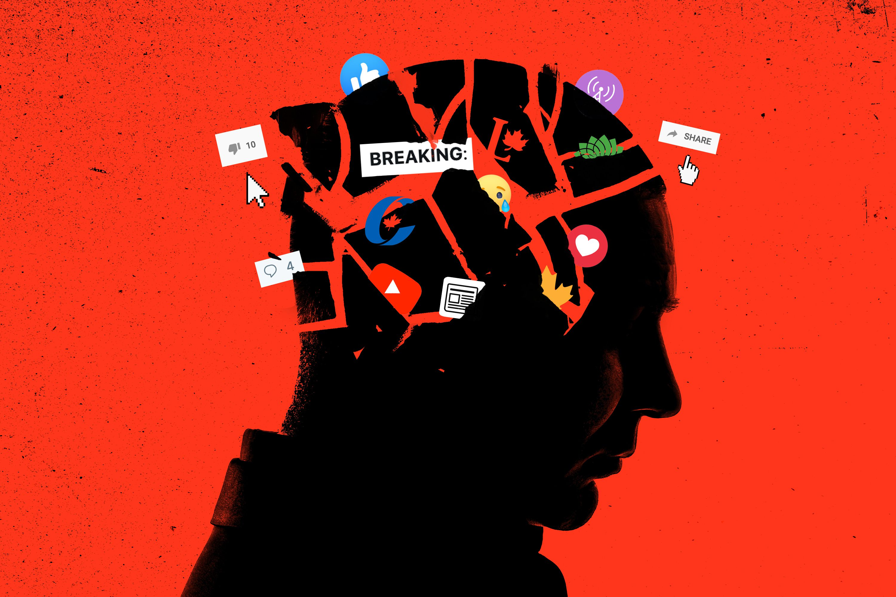

About Social Media
Social Media is the network of websites and applications that enable users to create and share content or to participate in social networking.
Social Media titans:
- Youtube
Social Impact
Social Media is a brand-new concept in terms of human history. Never before have we as individuals had such access and connection to everyone else. Just like every other technology in these modern times, Social Media is also changing rapidly, and people are discovering new and frightening things about it. With this change, Social Media is also becoming extremely influential extremely quickly.
It is also becoming dangerous. Social Media is so powerful it can end careers and even ruin lives overnight. Just about everyone who uses it holds that power, yet also is suseptible to it's wrath. Lies spread like wild-fire and people tend to not care who it burns. You have to be very careful about how you use Social Media, and always research everything before jumping on any band-wagons.
Economical Impact
Businesses are now able to have their own media brand through the use of Social Media. Though Facebook and Google now control most of spending through Social Media, it has opened up new opportunities for advertising for any business or entrepreneur. All this allows smaller brands and businesses to stand out and build up a name for themselves. I think it's good for the free market for all these businesses to be able to represent themselves easier and gain a following through Social Media.
Political Implications
In today's world, tension is high between groups of people, and quite often opposing views are taking on almost every issue. Social Media could be contributing to this division. Social Media is design to keep you hooked; to keep showing you content it thinks you'll like. When you look up a video on Youtube, or someone you follow on Twitter makes a tweet, Social Media will keep suggesting and showing you content in-line with the same viewpoint. People can live closed off from other ideas and points of view and continue to recieve, validation. This keeps up until we get these radically differing sides on every issue, such as who should be President.
Conclusion
Social Media is extremely powerful, influential, and every growing and changing. It can be great for staying connected and growing a business, networking and making your voice heard, but it is also dangerous. It can end careers, ruin lives, all based on a lie or misinformation. It can be extremely divisive; compounding disagreements in politics and any other issues. All-in-all Social Media definitely isn't going anywhere and we're still learning what the more subtle implications of it truly mean. It's best to proceed with caution. Don't take anything you read for truth before you do your own research, and be careful what you put out there, because it will never leave.